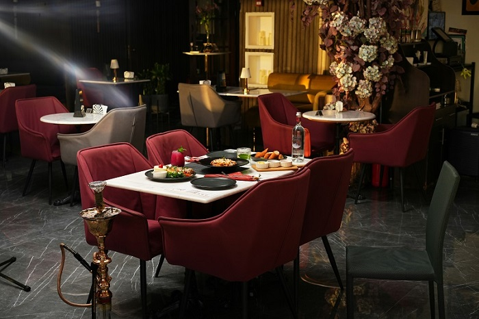
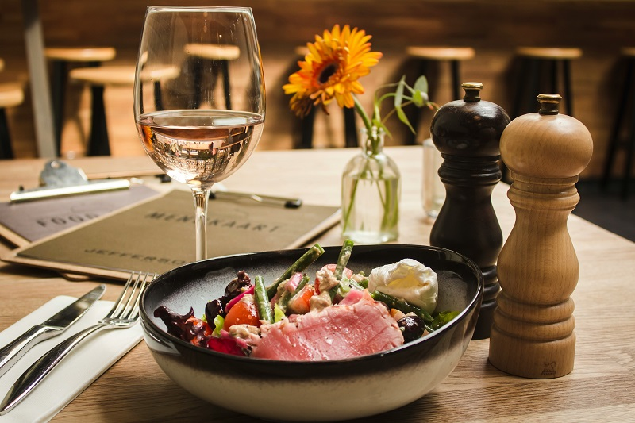
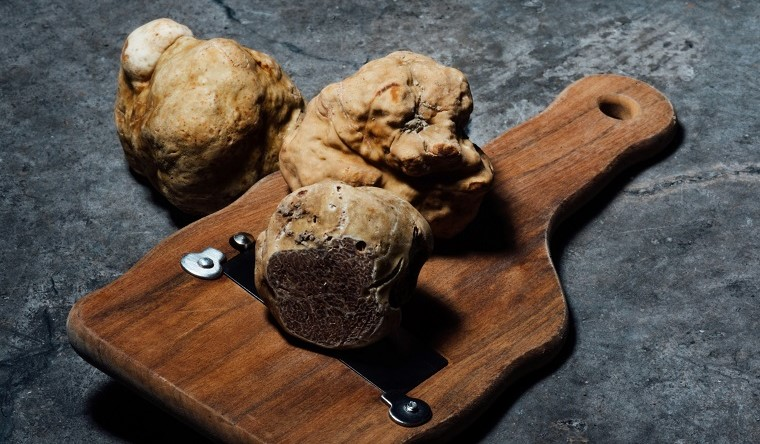

Where culinary artistry meets timeless elegance. Indulge in a symphony of flavors crafted with the finest ingredients, served in an atmosphere of sophistication and warmth.

Our Story
Born from a desire to celebrate the art of fine dining, FIOR emerged as a sanctuary where elegance, flavor, and emotion intertwine. From the very beginning, our vision was simple yet profound: to craft an experience that transcends the ordinary, one that lingers in memory long after the final course.
Inspired by the beauty of seasonal ingredients and guided by a passion for culinary excellence, FIOR was built on the belief that every detail matters. Our chefs honor tradition while embracing innovation, creating dishes that tell stories of heritage, exploration, and artistry
More than a restaurant, FIOR is a tribute to moments shared, where candlelight, conversation, and exceptional cuisine come together in perfect harmony.
Welcome to FIOR. Where every flavor blooms, and every experience feels timeless.
“Elegance elevated to its purest form. FIOR is a journey crafted with precision and soul.”
- Modern Taste Review

Our Philosophy
The pursuit of perfection
Our journey is a relentless pursuit of perfection, beginning long before the doors open each evening. It starts with forging deep connections with artisanal producers and dedicated farmers, ensuring that only the finest, most vibrant ingredients arrive in our kitchen.
This commitment to sourcing is the foundation of our philosophy, a belief that great food begins with exceptional raw materials. Every plate is a testament to this devotion, showcasing natural beauty and profound flavor.
Each preparation that emerges from our kitchen honors that origin, crafted with patience, technique, and intention. With every cut and every flame, we strive to elevate the essence of each ingredient, allowing its true character to shine.
The Art of Service
The ambiance at FIOR is meticulously designed to be an extension of the culinary experience.
We've curated a space where sophisticated design meets warm intimacy, creating an atmosphere that is both grand and welcoming. From the soft glow of our custom lighting to the perfectly set tables, every element plays a role in the narrative we wish to share. It is a setting crafted for celebration, connection, and quiet enjoyment, a haven from the bustle of the world outside.
Every detail is intentional, shaped to heighten the senses and invite a lingering appreciation of the moment. The textures, the acoustics, the subtle movement of light throughout the evening.

The Alchemy in the Kitchen
This profound respect for the ingredient is matched only by the mastery applied in its preparation. Our chefs view the kitchen not just as a workspace, but as a studio for culinary alchemy.
Here, traditional techniques are refined and innovative methods are explored, all with the singular goal of elevating inherent flavor without masking its origin. It is a dance of precision and creativity, where every simmer, slice, and seasoning is executed with intention.
The result is a dining experience that is both deeply familiar and wonderfully surprising, confirming our belief that true perfection lies in the harmonious balance of nature's bounty and the chef's artistry.
It is a setting crafted for celebration, connection, and quiet enjoyment.